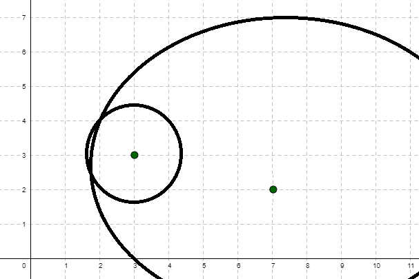

Project SOLO
The Context
The idea of Project SOLO was started in 1970 by Thomas Dwyer as an experimental program for "researching and testing the potential of computers for the range of subjects found in large urban school systems."
This was initially formed as part of the Special Interest Group on Computer Uses in Education (SIGCUE) within the Association for Computing Machinery (ACM). The inception document for the project was published in the society's newsletter Outlook (Volume 4, Issue 1; February 1970).
You can see this full document as "Project Solo: A Statement of Position Regarding CAI and Creativity", where "CAI" refers to "Computer-Assisted Instruction." A key part of the focus is stated right at the start:
Primary emphasis is being placed on the importance of each student as a creative person who can learn to use the computer as an exploratory tool.
Dwyer characterized educational programming as having two modes: Dual and Solo. The "Project SOLO" name was meant to reference the transition of a pilot learning to fly, going from "dual" flying with an instructor to "solo" flying alone. However, as the inception document states:
It is important to notice that SOLO implies more than "student alone." It means that the student must make his way on his own, but within a highly structured, well-prepared environment.
Essentially, in Dwyer's scheme, the computer would serve as the enabling "system" that allowed a "solo mode" to take place, where the student would not be working with the guided attention of a teacher ("dual mode") but rather exploring on their own in the context of a constrained system. I highly recommened reading this short inception document because it makes you realize how far we have come — and not necessarily in a good way — from what was being attempted here.
Preliminiaries to Project SOLO
Let's consider a few sources that show us how all of this evolved.
The first paper we can consider is another by Thomas Dwyer, following on from his inception document. This was called "Some Principles for the Human Use of Computers in Education" and it was first published in early 1970 (ERIC source). The version I link to here is a reprint of that paper from the International Journal of Man-Machine Studies (volume 3, issue 3) which was published in July of 1971 (Source).
In this paper, Dwyer reinforces the dual/solo modes of interaction:
While it is clear that dual instruction involving close guidance by a teacher is essential (one does not recommend that a student immediately go out in an airplane and "do his own thing"), it is equally clear that the student will optimise his benefits from the dual mode if he knows he is preparing for a solo flight. He knows, in fact, that he can eventually exert more influence on his learning than his instructor.
A very key point from this paper is:
One of the most interesting uses of computers we have employed in our high school work involves the creation of tutorial, review, gaming and simulation programs by students (not teachers) for the improvement and individualization of various courses.
The emphasis there is mine.
Clearly the idea of games and simulations was important as it was a way to engage students. Thus you have to imagine a whole generation of young people growing up being exposed to the idea that computers could do something fun or, at least, interesting. As the paper notes, "the students's work along these lines can very well be superior to the teacher-constructed programs" and one can imagine that was the case with the games and simulations as students learned to stretch their imagination.
Another paper was "Teacher-Student Authored CAI Using the NEWBASIC/CATALYST System" and it was published in early 1970 (ERIC source). This paper was also reprinted in the Communications of the ACM (volume 15, issue 1) which was published in January of 1972 (Source).
This paper puts a particular emphasis on the "solo mode" that gave the project its name:
We would classify the writing, debugging, and revision of an original BASIC program by a student as SOLO mode, since the programs with which he interacts (e.g. the BASIC compiler and library routines) are not pedagogically intended. We also consider a student who authors a CAI program such as a simulation or a tutorial to be in SOLO mode.
What's quite clear here is not just the emphasis on BASIC, which my overall history will involve itself quite a bit with, but also this focus on students interacting with existing programs and also — crucially! — with students creating their own. This is reflected in another bit from the paper:
After working with another person's tutorial or simulation (preferably his own teacher's), the student wants to know how it worked. It has become clear to us that this question should always be answerable, and within the context of the same system that generated the initial curiosity.
This is basically saying that students will want to take apart those BASIC programs to understand how they worked. Certainly in the context of gaming and simulation history, this is exactly how variations on game ideas and concepts proliferated.
A final paper worth considering here is "Primer for the NEWBASIC/CATALYST System" which was published in October of 1970 (ERIC source).
This paper is more about how to actually interact with the system that was implemented as part of Project SOLO. This gives you a bit of a technical understanding of how what was described in the previous two papers was actually carried out and, as such, has immense historical value.
Project SOLO Modules
This takes us to the newsletters for the project. Specifically, an address by Dr. Richard Bellman is provided in issue number four of the Project SOLO newsletter from 16 October 1970. The address is called "Myopia, Cornucopia and Utopia." I provide this newsletter because it's historically interesting in that it shows some of the tension that existed around the idea of computers and how they facilitated education. The paper notes that while this is "No. 4", a few other letters preceded this one. Those preceding sources are the ones I mentioned above.
Moving forward, the issues of the various Project SOLO newsletters focused on modules. These were essentially programs, mostly written in BASIC and mostly on mathematics, but with a little of every subject thrown in. Here's an example of what was in issue 20 (from December 1971):
Here's another example of the material in issue 21 (January 1972):
Where things get interesting is if we look at issue 22 of the Project SOLO newsletter from June 1972. You can read that whole issue if you want but I've narrowed that reference down to focus on some specific highlights from the issue.
An interesting statement, reinforcing what we read in the preliminary papers leading up to this point, is the following:
Distinctions can be made between games and simulations, although the programs students write in these areas often combine both concepts. The real fun begins when students modify, or better yet create the programs behind simulations and games.
Along those same lines:
The following programs were all written by students at Fox Chapel Area High School. These students wrote their programs with their fellow students' needs in mind. Each program is a tutorial aimed at helping younger learners master a new skill.
So that's an interesting concept. We have students creating programs that help other students learn. This is very similar to what Bob Albrecht was doing and will covered in the history on the People's Computer Center.
In this issue, there is mention of: "four computer games: hide-and-seek, NIM, MODULO, and space war."
The one I want to focus on here is Hide and Seek, also known as "Project SOLO module #0201" as this will start us down an interesting path that shows some common threads as a particular style of game — adventure games — were eventually created.
Hide and Seek (1972)
The goal is, as the game instructions print out, to "FIND THE FOUR PLAYERS WHO ARE HIDDEN ON A 10 BY 10 GRID." The player is given ten guesses with which to find these other players. It's worth noting these are other fictional players and not actual players of the game. In fact, those players are really nothing more than point locations on a grid.
With each guess the player is meant to pick a point on the grid and then the program will indicate the distances to each of the hidden players. If the player's guess is exactly where a hidden player is located, then they get credit for finding that person.
The grid is the first, or top-right, quadrant of the Cartesian coordinate system, with the origin point — (0,0) — being in the lower left of the grid. Thus all of the player guesses will be to the right and/or up from the origin.

An example playthrough might be instructive to walk through. Here is how things started off in my playthrough:
TURN NUMBER 1 , WHAT IS YOUR GUESS?
? 3,3
YOUR DISTANCE FROM PLAYER 1 IS 1.4 UNIT(S).
YOUR DISTANCE FROM PLAYER 2 IS 6 UNIT(S).
YOUR DISTANCE FROM PLAYER 3 IS 5 UNIT(S).
YOUR DISTANCE FROM PLAYER 4 IS 3 UNIT(S).
So one of my hidden players (the first one) is 1.4 units away from the point I chose as a starting point: (3,3). One strategy that immediately suggests itself is to draw a circle of radius 1.4 with a center at (3,3).
So now I get my second guess:
TURN NUMBER 2 , WHAT IS YOUR GUESS?
? 7,2
YOUR DISTANCE FROM PLAYER 1 IS 5.3 UNIT(S).
YOUR DISTANCE FROM PLAYER 2 IS 8.6 UNIT(S).
YOUR DISTANCE FROM PLAYER 3 IS 2 UNIT(S).
YOUR DISTANCE FROM PLAYER 4 IS 5.6 UNIT(S).
Now my first player is said to be 5.3 units away from the point I tried: (7,2). So, employing the same strategy, I now draw a circle of radius 5.3 units away from (7,2).
Now I can try a third guess:
TURN NUMBER 3 , WHAT IS YOUR GUESS?
? 5,7
YOUR DISTANCE FROM PLAYER 1 IS 4.2 UNIT(S).
YOUR DISTANCE FROM PLAYER 2 IS 3.6 UNIT(S).
YOUR DISTANCE FROM PLAYER 3 IS 7.2 UNIT(S).
YOUR DISTANCE FROM PLAYER 4 IS 2.2 UNIT(S).
Now my first player is said to be 4.2 units away from the point I tried: (5,7). I can thus draw a circle of radius 4.2 units away from (5,7).
If the mathematical strategy holds, the place where the three circles intersect must be where that player is hidden. And sure enough, here's the output if I provide that intersection as my fourth guess:
TURN NUMBER 4 , WHAT IS YOUR GUESS?
? 2,4
YOU HAVE FOUND PLAYER 1
YOUR DISTANCE FROM PLAYER 2 IS 5 UNIT(S).
YOUR DISTANCE FROM PLAYER 3 IS 6.4 UNIT(S).
YOUR DISTANCE FROM PLAYER 4 IS 2.2 UNIT(S).
And there you go! One of the players has been found.
Since each guess gives the player information about all four of the hidden players, this certainly suggests that the strategy used above is going to be sound. But you can also streamline it a bit as follows:
- Test the point at (0,0).
- Test the point at (9,0).
- Draw arcs from (0,0) with the four different distances that were given.
- Draw arcs from (9,0) with the four different distances that were given.
- Use four more turns to locate all the hidden players.
Steps 1, 2, and 5, when applied cumulatively, mean that you can generally find all of the hidden players in six moves.
A possibly interesting and challenging variant of this Hide and Seek program would be if instead of getting distances to each hidden player by specifically identifying the actual player each time, the game just provided a list of your distances to the four hidden players but without calling out the specific player in each instance.
In that scenario, the output list would likely have to be provided in random order or maybe in an ascending order. The challenge with this approach is that someoine playing the game wouldn't really be able to triangulate two guesses, as with the above strategy, unless they were able to form a good sense of how the distances pair up. This might actually be a little too tedious since a given player, with this scenario, might have to then just test each possible pairing.
This program was written in BASIC for the PDP-10. You can see the original code from the listing. There's also a slightly modified version that should make the BASIC a bit easier to run on modern BASIC interpreters.
Clearly this program is nothing more than a mathematical exercise. In fact, the opening text for it claims that "this game encourages students to become familiar with the Cartesian Coordinate system." Yet, even given that, the game is clearly situated in the context of the children's game "Hide and Seek." As such, that aspect, simple as it may be, does provide the barest hints of a narrative.
The program could have just said "find four points hidden on a grid" but instead it said there were "four players"; that is, at least with a bit of imagination, you can imagine that there are characters who are actively playing with you as part of the game. The instructions to the game also suggest carrying on the "playing a game with others" conceit if you "lose":
IF AFTER 10 TRIES YOU ARE UNABLE TO CARRY OUT
THIS TASK YOU MAY CONTINUE TO BE 'IT', BUT THE
PLAYERS WILL BE PERMITTED TO MOVE TO NEW
LOCATIONS.
It might seem odd to focus so much attention here on what was such a simple program but, as noted above, there was a strategy that could be used and even a better or worse strategy depending on the design of the game. This is certainly a motif that would come to dominate many later game design discussions. Further, there was a very small narrative that was possible to put in place. The game tried to situate its mechanics in the context of a fun game like "Hide and Seek."
Another reason I focus on this very early game is that this provides an entry point into considering the barest hint of topographical style games that would, ultimately, lead to the concept of the "adventure game," even though that was never a plan at this stage and the path itself certainly wasn't a direct linear one. In fact, this particular Hide and Seek game would be referenced again as at least an inspiration of sorts for the next stage of games I will consider.
Aside: Lunar Landing
Perhaps worth noting, but more from a historical standpoint, is the "Lunar Lander"-style program mentioned in the same issue.

This was apparently written by a ninth grader named Lawrence Siegel. I have no idea how much Jim Storer's first version of a "lunar lander" (called ROCKET), if such it was and as it seems to be, influenced the Project SOLO student version. What is of note here is that this does show a few similarities overall to the Hide and Seek concept: a mathematical exercise framed as a game that, in turn, was framed by at least the hint of narrative.